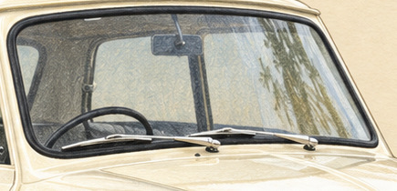
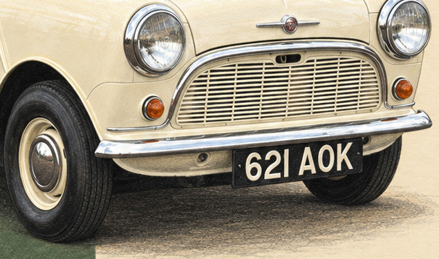

Morris Mini-Minor Number One
- 1Sheet
- 2Judge
- 3Build
- 4Upload
- 5Submit
- 6Review
- 7Approved
- 8History
- 9Live
01 · The sheet

Artwork details
1959 · 45.0 x 60.0 cm planned. The first square / everyday icons


Generated complete native illustration; separate licensed vector type. Actual native PPI 61.3. Source photos used for reference only; copyright permission unknown. Owner approval required. Access date 2026-09-09.
Editable SVGSource ZIP03 · History
1
- 2026-09-09Artwork for owner approval; no production, framed lot or marketplace submission.